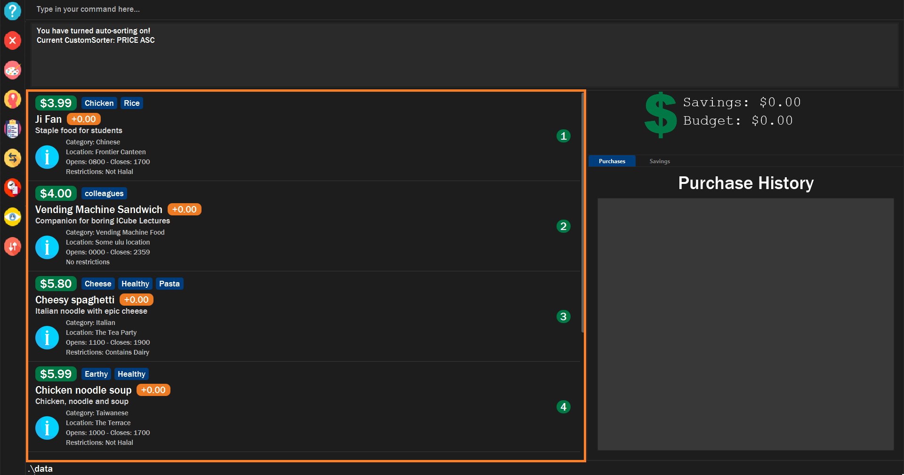
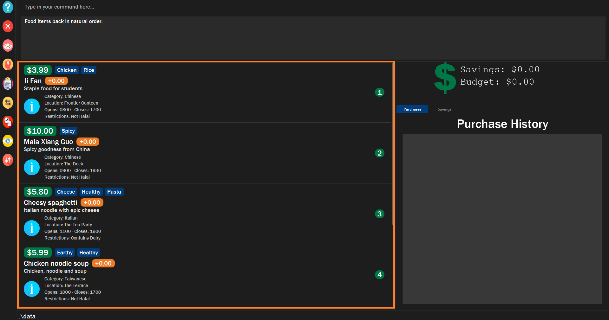

Overview
$aveNUS is a command line interface (CLI) financial planning application that my team and I designed for CS2103T (Software Engineering) module in School of Computing, National University of Singapore (NUS).
In this project, we morphed the sample address book application into $aveNUS, an application that allows NUS students to track their financial spending with regards to food purchases. Additionally, the application provides them with the best food recommendations within their current budget as well as a savings feature to track their savings.
The table below provides a quick summary of the symbols and formatting used in this portfolio.
|
Command that can be typed into the command box |
|
Success execution of command |
|
Tips that might be useful |
|
Additional information that is good to know |
|
Important pointers to take note |
Summary of contributions
This section provides a summary of the contributions that I have made to the team project.
Major enhancement: Sorting Feature
I have added a sorting feature to $aveNUS which allows users to sort the food items based on some specific criterion.
What it does
The sorting feature allows users to sort the list of food based on some criterion. This is done by taking into account specific fields given from the command line interface, or the preset comparator which the user has created.
For example, if the user wishes to see the list of food items in order of ascending price, the list will be then sorted. As a result, the cheapest food item will be on the top of the food list, followed by the second cheapest food item. And finally, the most expensive food item will be on the bottom of the food list.
Not only that, the user can turn autosorting on or off. As a result, when the user adds a new food item, the food list will be autosorted immediately.
Justification
NUS students would want to view food based on certain priority. They do not want to scroll through the entire list just to find the food that they prioritize.
For example, if they want to view the cheapest food in the food list, they would want it readily available to them.
Highlights
While implementing this feature, I had to implement new commands such as default, sort, viewsort,
makesort` customsort and autosort. default and sort forms the backbone of the sorting algorithm,
where it sorts food items based on default or specified criterion respectively.
makesort, customsort and autosort allow users to specifies their criterion to sort the food items. The application
can then store the specified criterion and taken into account these criterion. As a result, the user will be able
to see which food items most accurately match the criterion.
Storage functionality for the user’s criterion were also implemented. This means that the criterion are conveniently saved into their hard disk and persist even after the application is closed and restarted.
In this way, the user benefits from the sorting algorithms which allows users to see the food that best matches the criterion at the top of the food list.
Finally, they should be able to view the fields of the custom comparator using viewsort.
Minor Enhancement: Alias Feature
I have added a alias feature to $aveNUS which allows users to create shortcuts for commonly used commands.
What it does
The alias feature allows users to create shortcuts for commonly used commands. For example, if the user wishes to
view the custom comparator made, but does not want to type in viewsort all the time, he can add an alias to it. He
can do use by typing alias viewsort v where v is now the shortcut for viewsort.
When he does not require the alias for viewsort, he can clear it anytime using alias viewsort.
Justification
NUS Students occasionally forget how to execute certain commands which may seem too long such as viewsort and
customsort. As a result, it would be good for the user to be able to add shortcuts to save time and typing.
Highlights.
I only had to add the alias command to implement this new feature. However, I had to make sure that users will not
accidentally keep in other conflicting shortcuts. For exampke, alias viewsort sort. is an invalid command as sort is
already a command word in $aveNUS.
Storage functionality for the user’s alias shortcuts were also implemented. This means that the shortcuts are conveniently saved into their hard disk and persist even after the application is closed and restarted.
Code contributions:
Here are the commits, pull requests and code that I have contributed for this project.
Other contributions
-
Project Management:
-
Documentation:
Contributions to the User Guide
This section shows the contributions that I have made to the sorting feature of the User Guide.
Sorting
Allows the user to sort the food items based on his liking. This is done so that the user is able to get the food which is most relevant to his or her preferences.
You must always provide pairs of FIELD and DIRECTION to execute the Sorting commands.
The fields are as followed: NAME, DESCRIPTION, PRICE,
CATEGORY, LOCATION, OPENING_HOURS, RESTRICTIONS.
The directions are as follows: ASC or DESC.
|
Ordering of pairs matters! For example, specifying: PRICE ASC NAME DESC sorts the food items first based on
price in ascending order. Following which, sorts the food items based on names in descending order.
|
Sorts food items based on fields: sort
Sorts all the food items by some specific FIELD.
Note: You can have more than one pair of FIELD and DIRECTION.
|
The list of food items will be sorted by the fields you have entered. 
|
Make your own custom comparator: makesort
Create your own custom comparator, which will be stored within the storage of the application, using specific FIELD and DIRECTION.
|
Your custom comparator will be shown. |
Sort based on your custom comparator: customsort
Sort Using your own custom comparator, which you have creating from MakeSort.
|
The list of food items will be sorted by the fields your custom comparator.

|
Auto sorts list based on custom comparator: autosort
Turns on and off auto sorting, based on your own custom comparator, every time you make changes to the food list. There are only two states, ON or OFF.
Once you turn auto sorting on, customsort, sort and default will not work. They will only work if and only if you
turn auto sorting off.
|
|
A message will inform you if you have turned autosorting on or off. 
|
Views the fields for the custom comparator: viewsort
Views the current Custom Sorter.
Format: viewsort
|
A message will inform you of the fields of your custom comparator. 
|
Sorts food items based on natural order: default
Sorts the food items based on their default ordering, where it is based on ascending category, name and then price.
|
The list of food items will be sorted in its natural order.

|
Contributions to the Developer Guide
This section shows the additions that I have made to the sorting feature of the Developer Guide.
Sorting feature
The Sorting feature allows users to sort their food items based on certain FIELD and DIRECTION.
First and foremost, they will be able to sort the food items based on their default ordering.
The default ordering is based on ascending price, name and then category. This is done using the default command.+
Not only that, they will be able to implement their own custom comparator using makesort. From this, they should be able to use customsort and autosort`.
customsort sorts the food items based on the custom comparator, where autosort sorts the food items every time there is an edit to the food list.
Classes for sorting feature in Model
The Sorting feature was implemented with a new set of classes introduced to the Model.

From the model, the CustomSorter stores the comparator for autosort and makesort.
From which, you will need to call makesort FIELD DIRECTION to create the custom comparator. The CustomSorter contains a FoodComparator.
The FoodComparator stores fields which will be needed for various FOOD to be compared. The DefaultComparator helps to sort food items based on their natural ordering. This is called via the default command.
Finally, the FieldComparator helps to compare between various FIELD.
Creation of new Custom Comparator
The user may wish to create a new custom comparator. This can be done with the makesort command.
The sequence diagram for interactions between the Logic, Model and Storage components when a user executes the makesort command is shown below.
The user may want to create a new custom comparator. This can be done with the makesort command.
The fields are stored in the SavingsAccount in the CustomSorter object, which stores the necessary as a list.
The current implementation for creating a new CustomSorter is done by overwriting the existing CustomSorter, with a new CustomSorter with the desired fields.
The command is read as a text string from the command box in the UI and then is executed by calling MainWindow#executeCommand(), which passes this string (named commandText) to the Logic component by calling Logic#execute(Model model).
The following activity diagram below summarizes how the save command works

If fields are given, the original CustomSorter is overridden by a new CustomSorter with new fields. Else, the original CustomSorter is overridden by a new CustomSorter with no fields.